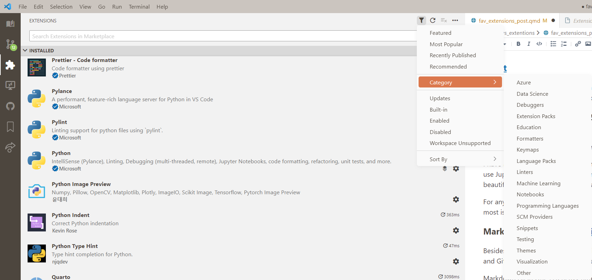

VS Code Extensions Everyone Should Have
Why VS Code?
Visual Studio Code was originally written to be web - based. Thus it feel so light. Here are some extensions that took my coding to the next level.
My Extensions
General Quality of Life
These are the extensions that improve VS Code as a whole. These are also the “optional” extensions that I use the most (i.e. not required to function like Python or Git).
Better Comments
As you can see by the whole section dedicated to themes, I’m a visual person. So an extension that can visually differentiate intentions between comments was a game changer. Now I can visually see the difference between warning and todo comments. Cannot recommend enough.
Bookmarks
This lets you put bookmarks throughout your scripts. This really helps with navigation, but I also used it to keep track of what I want to work on next and make a todo list. It also adds a bookmark page on the action bar. However, now that I usually use Jupyter Notebooks I don’t personally use this extension as much as I used to.
TabOut
If you only get one extension from this article, this is it.
Instead of using right arrows to get out of parenthesis, brackets, or quotes you just hit tab. You don’t need to lift your hand from the keyboard to hit the arrow keys, you just reach up and tab out. It nearly brought me to tears the first time I used it. Cannot recommend enough.
Themes
These affect the look of VS Code from colors to icons.
Color Themes
I am a very visual person, so how my code works is very important to me. Every time I open VS Code the first thing I do is hit Ctrl + K & Ctrl + T to change the visual theme to match my mood. I have come to discover that my mood linked to my environment, and that doesn’t end at my decor. If I like looking at my code I like coding more.
Noctis is the most beginner friendly theme pack with only 11 choices.
Favorites: Bordos, SerenoBearded Theme was my favorite for years and has a good spread of themes with 32 variations. I especially like the high contrast themes.
Favorites: Surprising Watermelon, Ebony, Milkshake RaspberryRainglow is the mother of all theme packs. It has 320 themes, which is a little overwhelming at first. But I really enjoy ruffling through them for the perfect theme for my coding session. The thing I love most is that there are more than one version of each theme, a normal and a high contrast theme.
Favorites: Earth Song Light, Frontier light, Grunge light, Hyrule Contrast, Mud Contrast
Look out if a theme is high contrast or not. Some people like low contrast because the other code fades into the background and allows them to only focus on what they’re writing. I prefer high contrast themes because I have very sensitive eyes that strain easily.
Honerable mentions: Github Theme, Dracula Official, & Theme
Material Icon Theme & Material Product Icons
These themes change the look of VS Code interface itself. I never change these themes.
I love the Material Icon Theme because not only does it change the file icons to differentiate file types but it also changes folder icons depending on its name. I love this extension so much that I have gone back through some repositories and changed folder names to fit with this extension. But if Material Icon Theme is overwhelming or not to your taste I also recommend Bearded Icons from the same developer as Bearded Theme.
Honestly, I just use Product Icons because for consistency. It’s not important but shows VS Code’s flexibility.
Git & GitHub
GitHub Pull Requests and Issues
This is a necessity if you use Github, whether you collaborate or not. It allows you to make an issue, create a branch for that issue, edit the code, create a pull request, and merge all within VS Code. In this repository I use issues to keep track of ideas for new blog posts and this is a game changer.
GitHub Copilot (*subscription)
AI is the future and that’s no different with coding. Github Copilot will write code for you and help streamline your flow. It comes with a 30 day free trial and is $10 a month after. I’ve just started copilot and may write a blog post about it in the future but so far it’s amazing! I’m especially curious about it’s ability to write tests.
Free Alternative: IntelliCode & IntelliCode API Usage Examples
Coding
Python Indent
Documentation: Python Type Hint & autoDocstring
Python Type Hint helps to add types to your function arguments.
autoDocstring helps to populate summary info for your functions. This also makes documentation a lot easier (meaning you’ll actually do documentation lol).
def new_function(arg1: str, arg2: int):
"""
prints the arguments
Args:
arg1 (str): a string that you want to print
arg2 (int): an int that you want to print
"""
print(f"arg1: {arg1}, arg2: {arg2}")Pylint
Lint, or a linter, is a static code analysis tool used to flag programming errors, bugs, stylistic errors and suspicious constructs.1 Using a linter like Pylint helps keep code consistent and up to standard.
Formatters: Black (python & jupyter) & Prettier
Not to be dramatic, but I would not still be coding without code formatters. As I mentioned earlier, I am a very visual person so I want my code to be pretty too. Enter: formatters.
I have been using Black for years, and love the auto formatting on save feature. I was so attached to Black that I almost refused to use Jupyter notebooks until the March 2023 update finally allowed it. It is so satisfying to see your scrappy code instantly turn beautiful, making block-text dictionaries beautiful and messy functions readable.
For anything that’s not Python or Jupyter I use Prettier because it’s reliable and has tons of languages. The ones I probably use the most is YAML and markdown.
Markdown: Markdown All in One, Markdown Checkbox, & markdownlint
Besides Python/Jupyter, Markdown is probably the language I use most. I use markdown to take notes and write documentation, and Github Display pages run on markdown. So I have a few extensions to help streamline the process.
Markdown All in One is a heavy hitter. This lets you automatically create a table of contents, Auto completions, print to HTML. My favorite feature is add/update/remove section numbering to remove the headache of manually redoing it.
Markdown Checkbox is a really simple extension that just inserts a checkbox.
MarkdownLint is the same principle as Pylint and helps make markdown formatting more consistent.
Download this Markdown Extension Pack to get all of these extensions and more!
Data Science
Excel Viewer
Lets you see previews of both CSV and XLSX files in a side viewer. You can filter and sort columns, manipulate the data, ext. I hate opening Excel and having another program bog down my system’s ram. Chef’s kiss.
SandDance for VSCode
SandDance lets you do some visual analysis on datasets. I like using it to get basic insights without having to manually program the charts myself. But it is a beast to run so use it wisely.
Quarto
Quarto is a great way to make a blog! I use it to make this blog right now. It used to be RMarkdown but you can now use it as it’s own language. Highly recommend!
Edit your posts in Visual Mode - right click in the document and select Visual Mode. Turns Visual Studio code into an actual document editor and lets you do fancy things like insert and edit tables, format, add links, and so much more! (This works with any markdown document, not just Quarto!)
Discover More Extensions
If you want to discover more extensions yourself, you can easily do it inside VS Code! Just go to the extensions page and go up to the filter at the top. You can filter and sort by many options! And if you can’t find the perfect extensions, it’s easy to create your own!
